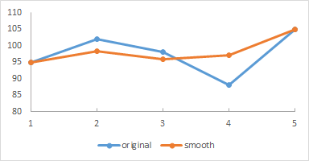

Plan Composition
For each problem, write two solutions, where each solution solves the problem using a different approach. Also, write a comment at the top of your code that describes which of the solutions you developed you prefer more and why.
1 Programming Problems
A personal health record (PHR) contains four pieces of information on a patient: their name, height, weight, and last recorded heart rate (as beats-per-minute). A doctor’s office maintains a list of the personal health records of all their employees.
data Record:
| phr(name, height, weight, heart-rate)
end
1.1 The BMI Sorter
Body mass index (BMI) is a measure that attempts to quantify an individual’s tissue mass. It is commonly collected during annual checkups or clinic visits. It is defined as:
BMI = weight / height ^ 2 (weight in kilograms, height in meters)
A simplified BMI scale classifies a value below 18.5 as "underweight", a value at least 18.5 but under 25 as "healthy", a value at least 25 but under 30 as "overweight", and a value at least 30 as "obese".
Design a program called bmi-report that consumes a list of personal health records and produces a report containing a list of names of patients in each BMI classification category. Use the following datatype for the report:
data Report:
| bmi-summary(underweight-patients, healthyweight-patients,
overweight-patients, obese-patients)
end
1.2 Data Smoothing
In data analysis, smoothing a data set means creating an approximating function that attempts to capture important patterns in the data while leaving out noise or other fine-scale structures/ phenomena.
95 102 98 88 105
95 98.33 96 97 105
102 was substituted by 98.33: (95 + 102 + 98) / 3
98 was substituted by 96: (102 + 98 + 88) / 3
88 was substituted by 97: (98 + 88 + 105) / 3
These information can be plotted in a graph such as below, with the smoothed graph superimposed over the original values.

Design a program data-smooth that consumes a list of PHRs and produces a list of the smoothed heartRate values.
1.3 Most Frequent Words
Given a list of strings, produce a list containing the three strings that occur most frequently in the input list. The output list should contain the most frequent word first, followed by the second most frequent, then the third most frequent. Break ties by putting the shorter word (by length in characters) first. You may assume that the three most frequent words will have different length. You may also assume that the input will have at least three different words.
1.4 Earthquake Monitoring
Geologists want to monitor a local mountain for potential earthquake activity. They have installed a sensor to track seismic (vibration of the earth) activity. The sensor sends measurements one at a time over the network to a computer at a research lab. The sensor inserts markers among the measurements to indicate the date of the measurement. The sequence of valuse coming from the sensor looks as follows:
20151004 200 150 175 20151005 .002 .03 20151007 ...
8-digit numbers are dates (in year-month-day format). Numbers between 0 and 500 are vibration frequencies (in Hz). This example shows readings of 200, 150, and 175 on October 4th 2015 and readings of .002 and .03 on October 5th 2015. There is no data for October 6th (sometimes there are problems with the network, so data goes missing). Assume that the data is in order by dates (so a later date never appears before an earlier one in the sequence).
Design a program daily-max-for-month that consumes a list of sensor data (as doubles) and a month (represented as a two-digit number) and produces a list of reports indicating the highest frequency reading for each day in that month. Only include entries for dates that are part of the data provided (so don’t report anything for October 6th in the example shown). Ignore data for months other than the given one. Each entry in your report should be an instance of the following class:
data Report:
| max-hz(day, max-reading)
end
2 Submission Guidelines
Please create four files in code.pyret.org, one per problem. Name them bmi.arr, datasmooth.arr, frequentwords.arr, and earthquake.arr. After you finish writing your programs, download your solutions to your computer. Create a zip file of these and upload using Captain Teach.